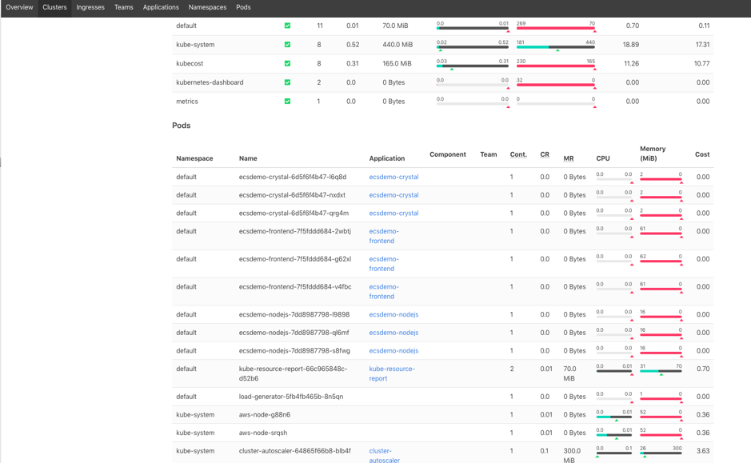

Optimizing over time (Right Sizing)¶
Right Sizing as per the AWS Well-Architected Framework, is “… using the lowest cost resource that still meets the technical specifications of a specific workload”.
When you specify the resource requests for the Containers in a Pod, the scheduler uses this information to decide which node to place the Pod on. When you specify a resource limits for a Container, the kubelet enforces those limits so that the running container is not allowed to use more of that resource than the limit you set. The details of how Kubernetes manages resources for containers are given in the documentation.
In Kubernetes, this means setting the right compute resources (CPU and memory are collectively referred to as compute resources) - setting the resource requests that align as close as possible to the actual utilization. The tools for getting the actual resource usags of Pods are given in the section on Rexommendations below.
Amazon EKS on AWS Fargate: When pods are scheduled on Fargate, the vCPU and memory reservations within the pod specification determine how much CPU and memory to provision for the pod. If you do not specify a vCPU and memory combination, then the smallest available combination is used (.25 vCPU and 0.5 GB memory). The list of vCPU and memory combinations that are available for pods running on Fargate are listed in the Amazon EKS User Guide.
Amazon EKS on EC2: When you create a Pod, you can specify how much of each resource like CPU and Memory, a Container needs. It is important we do not over-provision (which will lead to wastage) or under-provision (will lead to throttling) the resources allocated to the containers.
Recommendations¶
Use tools to help you allocate resources based on observed data¶
There are tools like kube resource report which can help with right sizing of pods deployed on Amazon EKS with EC2 nodes.
Deployment steps for kube resource report:
$ git clone https://github.com/hjacobs/kube-resource-report
$ cd kube-resource-report
$ helm install kube-resource-report ./unsupported/chart/kube-resource-report
$ helm status kube-resource-report
$ export POD_NAME=$(kubectl get pods --namespace default -l "app.kubernetes.io/name=kube-resource-report,app.kubernetes.io/instance=kube-resource-report" -o jsonpath="{.items[0].metadata.name}")
$ echo "Visit http://127.0.0.1:8080 to use your application"
$ kubectl port-forward $POD_NAME 8080:8080
Screenshots from a sample reports from this tool:

FairwindsOps Goldilocks: The FairwindsOps Goldilocks is a tool that creates a Vertical Pod Autoscaler (VPA) for each deployment in a namespace and then queries them for information. Once the VPAs are in place, we see recommendations appear in the Goldilocks dashboard.
Deploy the Vertical Pod Autoscaler as per the documentation.
Enable Namespace - Pick an application namespace and label it like so in order to see some data, in the following example we are specifying the default namespace:
$ kubectl label ns default goldilocks.fairwinds.com/enabled=true
Viewing the Dashboard - The default installation creates a ClusterIP service for the dashboard. You can access via port forward:
$ kubectl -n goldilocks port-forward svc/goldilocks-dashboard 8080:80
Then open your browser to http://localhost:8080

Use Application Profiling tools like CloudWatch Container Insights and Prometheus Metrics in Amazon CloudWatch¶
Use CloudWatch Container Insights to see how you can use native CloudWatch features to monitor your EKS Cluster performance. You can use CloudWatch Container Insights to collect, aggregate, and summarize metrics and logs from your containerized applications and microservices running on Amazon Elastic Kubernetes Service. The metrics include utilization for resources such as CPU, memory, disk, and network - which can help with right-sizing Pods and save costs.
Container Insights Prometheus Metrics Monitoring At present, support for Prometheus metrics is still in beta. CloudWatch Container Insights monitoring for Prometheus automates the discovery of Prometheus metrics from containerized systems and workloads. Prometheus is an open-source systems monitoring and alerting toolkit. All Prometheus metrics are collected in the ContainerInsights/Prometheus namespace.
The Metrics provided by cAdvisor and kube-state-metrics can be used for monitoring pods on Amazon EKS on AWS Fargate using Prometheus and Grafana, which can then be used to implement requests in your containers. Please refer to this blog for more details.
Right Size Guide: The right size guide (rsg) is a simple CLI tool that provides you with memory and CPU recommendations for your application. This tool works across container orchestrators, including Kubernetes and easy to deploy.
By using tools like CloudWatch Container Insights, Kube Resource Report, Goldilocks and others, applications running in the Kubernetes cluster can be right sized and potentially lower your costs.
Resources¶
Refer to the following resources to learn more about best practices for cost optimization.
Documentation and Blogs¶
- Amazon EKS Workshop - Setting up EKS CloudWatch Container Insights
- Using Prometheus Metrics in Amazon CloudWatch
- Monitoring Amazon EKS on AWS Fargate using Prometheus and Grafana